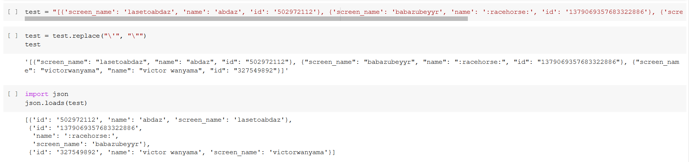

Natural Language Processing explored
üî†üì¢üà∫
Contents
Natural Language Processing explored
üî†üì¢üà∫¬∂
Natural Language Processing (NLP) is a branch of Machine Learning concerned with teaching computers how to recognize patterns in communications data generated by humans to:
gain insights when those patterns are visualised, and/or
use patterns learned to generate responses for human audiences.
In this section, I take you through various key experiences where I leveraged NLP.
My first experience - handling Amazon Alexa data¶
Looking for data science work armed with a theoretical foundation (Microsoft Professional Program in Data Science) and a capstone project, I was given a challenge based on Amazon Alexa review data. It was the first time I came across text data. It also did not help that it had a tight time window - I had to write the code and markdown for the notebook from scratch, then test and submit it within 2 hours (he would check the log to confirm). Needless to say, I did not finish on time - I struggled with it for a day.
That said, that experience allowed my to get my hands dirty with text data. In my mind, the use case was obvious in marketing - analysing written customer feedback from all communication channels.
The mistakes that I made at this point include:
I repeated myself a lot and did not make use of functions and list comprehension. An example of such code is below:
While my code did get the job done, it was not reproducible. I did too many custom tweaks during feature engineering, such that if I tried using this code on another text dataset, it would break. This would include use of specific words as filters as shown below:
I didn’t do any model evaluation and interpretation - this was my version of explaining why I chose a model and a certain loss function:
Working with job ad data¶
Fast-forward to some months later, I wanted to know what would be needed to get an applied data science role in marketing. The job title that I knew at the time was ‘Marketing Researcher’.
I decided to mine a job board and restrict results to the USA.
I wondered how to visualise the frequency of words and phrases.
It was at this point that I decided to use PowerBI instead of
Python’s matplotlib - I was more comfortable using the
former.
I also saw that joining words in sequence (way before I had ever
even heard of LSTMs) gave greater context compared to getting
frequency of the word alone.
To that end, I wrote a function systemizing the same:
and wrote another function that could generate a mini-report of
the top 5 phrases:
Working with Twitter data in my Delta Analytics fellowship¶
This period is where I got to really practice and hone skills in this space, and delve deeper into NLP practices as a whole.
NLP as a field is very wide because it has a variety of data forms (text, audio and video) and it also has a wide variety of uses (automation of tasks like translation, data annotation, transcription, voice synthesis, call analysis, synopsis generation etc.)
Due to its broad nature, I was forced to create a framework for myself that captured the overarching concepts in NLP and then solve the problem at hand. The problem that I aimed to solve in my fellowship was determining sentiment in multilingual, code-switched conversations, especially in the Kenyan context. This framework, the NLP toolbox üß∞, was so useful in helping me structure my talk in a more scientific way.
The mistakes that I made in this third NLP project were more meta, less technical in terms of error. This project helped me learn a lot of things like
Determine if you want to tell a technical or real-world story.
As I was preparing my graduation lecture, I wanted to show my process from start to finish - how my conceptual framework/ mental scaffolding worked, and launch into the localised story and how the framework was applied.
I found that I needed to choose either the local application or the framework to present to avoid causing my audience unnecessary confusion.
Balance simplicity and complexity.
One of the things that made this project gruelling is that I had to clean data and optimize my model to deliver feasible results in a short time AND make the content and presenter (me) as compelling as possible to mixed (technical and non-technical) audiences while describing the model and interpreting model findings.
The fellowship taught a lot of pedagogy that I had to apply such thattechnical aspects of the project have to be innovative (I combined existing techniques in a new way for local data)
key concepts and findings have to be designed into a compelling data story and presented in a compelling way
The project has to leave the lab and enter production.
This was the first time that I ran R and Python code in the same notebook, which was great! That said, one of the challenges of maneuvering a mixed environment in my notebook is the data had to be downloaded from one environment, then uploaded into the other environment ready for manipulation.
This makes running the project okay in the lab, but it makes the code very hard to use in production as is. Thankfully, I got to experience a code lab with Streamlit (a Python library designed to turn a Python script into an app) and join Masakhane, a grassroots movement advancing African language access in digital spaces. In both spaces, I was introduced to the concept of a transformer for the first time.Make JSON and other unconventional data formats your friend.
The Twitter data had a column in JSON, which was a pain to read in R:

because it was loaded as a string. After troubleshooting with my coach, she found this solution and shared how to read JSON in Python:

and R:
Rehearse, rehearse, rehearse.
A common thing that an ad agency will do is to conduct a “dry run” 24 hours to a pitch. This is where the presenter presents to the office as if they were the client.
This concept applied to teaching or sharing ML/AI concepts is: do a dry-run as many times as possible before the main event (maybe 3 times or more).
Additionally, the presenter, if live-streaming, has to run an actual live-stream with the team (in my case, my coach Ugaso and a key facilitator, Melissa). This is incredibly important for the following reasons:it calms nerves on the actual day
it allows the presenter and/or team to spot mistakes in the presentation like typos, misaligned content, unclear illustrations, slides that are too wordy etc.
it allows the team, at the end of the rehearsal, to identify mistakes in presentation delivery such as poor flow, mispronunciation, lack of eye contact with camera/physical audience etc.
it allows the team as a whole to master the streaming software and preempt possible technical issues e.g. internet outage, power outage, poor lighting etc.
it trains the presenter to avoid reading the presentation slides word for word and instead highlight
it ensures that eventually, pedagogy and presenting best practice is implemented, such that the presenter can smoothly deliver the presentation even with unexpected questions and feedback from the audience on the day of the presentation.